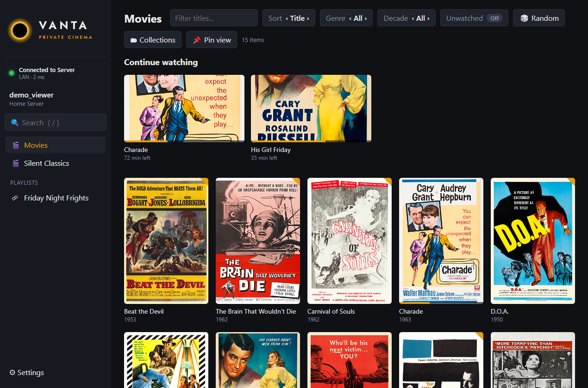

VANTA
PRIVATE CINEMA
A lightweight, fast and quiet beautiful home for all the
films and shows you already own.

by soybean_alien
v1.0.0
·
Windows 10 & 11
·
For Plex Media Server
·
Free & open source (GPL-3.0)